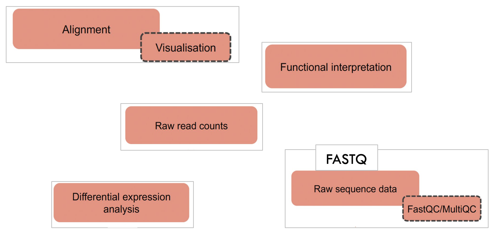
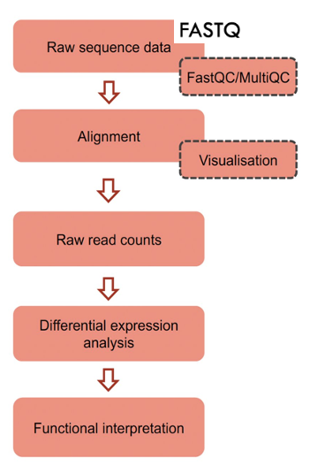

A differential expression analysis pipeline
Questions
- What are the different steps in a typical RNA-seq differential expression (DE) pipeline?
Objectives
- Get familier with the RNA-seq DE analysis pipeline.
Challenge
Let’s try and ask ourselves a question
- How should a typlical RNA-seq differential expression (DE) pipeline look like?
- To assist, we have provided the 5 basic processes as building blocks in the figure below. But these are placed in no particular order.
- Can you try and arrange them sequentially from Step (1) to Step (5). 
Solution

The basic steps in a differential expression (DE) pipeline include
1. Raw data and quality checking
- Obtain sequencing data in Fastq format
- Quality checking with fastQC and multiQC
- Quality trimming with Trim galore
2. Alignment and Visualisation
- Alignment with STAR aligner
- Visualisation using …
3. Mapped reads to gene-counts
Converting the reads mapped to the reference genome to a matrix which contains individual gene-counts per sample for downstream statistical enrichment analysis.
4. Differential expression (DE) analysis
Identify statistically significant DE genes using tools such as the R-library DESeq2.
5. Functional interpretation
Functional enrichment analysis using tools such as the R-library clusterProfiler.
- We will discuss each of the steps from (1) to (3) in detail today.
- The steps (5) and (6) will be covered on Day 2 tomorrow.
Key points
- Tools such as
FastQCcan be used for assessing the sequencing read-quality. Trim galoreis one of the many tools available for read-trimming based on multiple criteria.- We will use the aligner
STARto map the reads to the reference genome/transcriptome. - The identification of statistically significant DE genes can be done using R libraries such as
DeSeq2.
All materials copyright Sydney Informatics Hub, University of Sydney